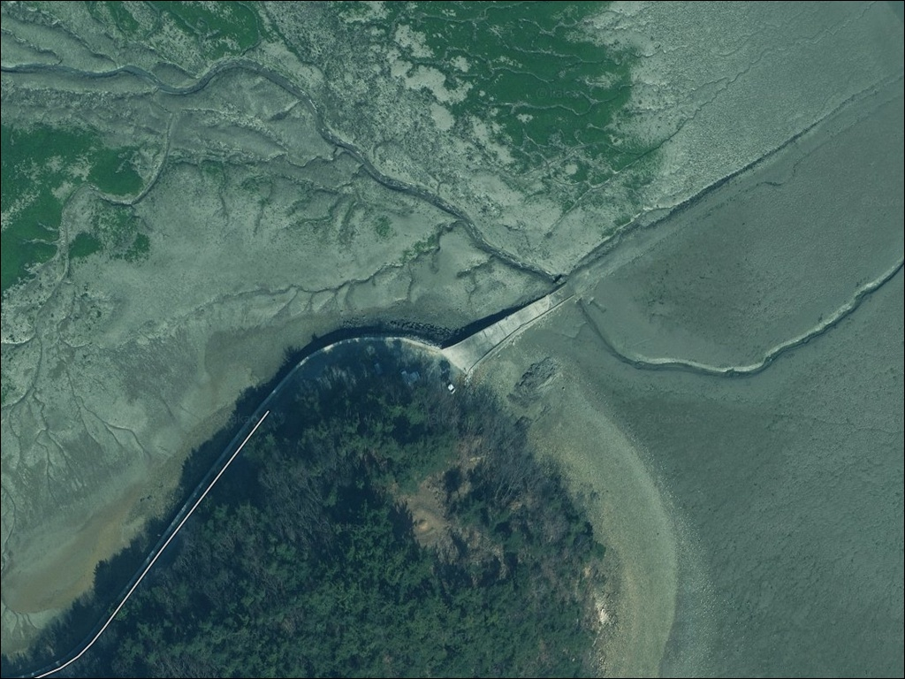
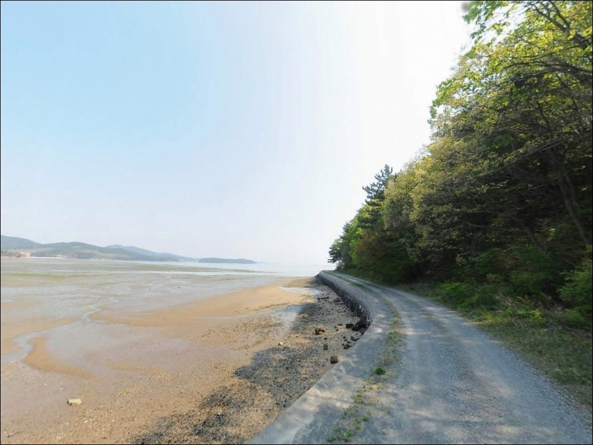
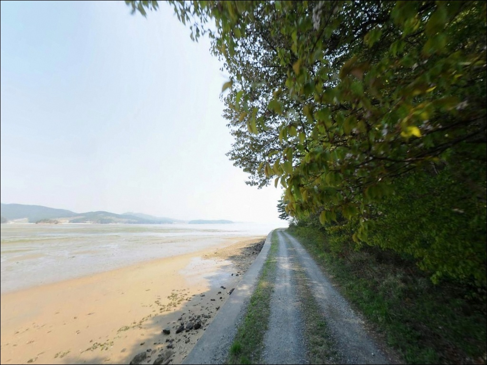
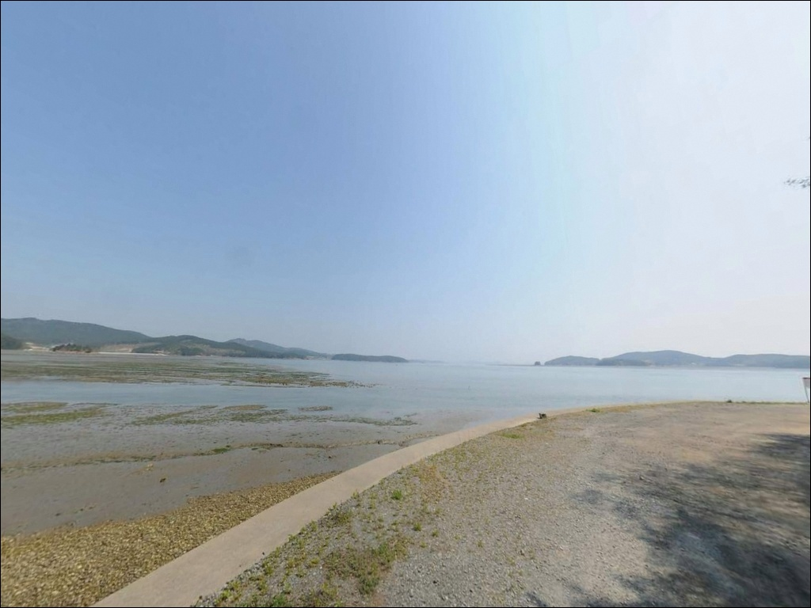
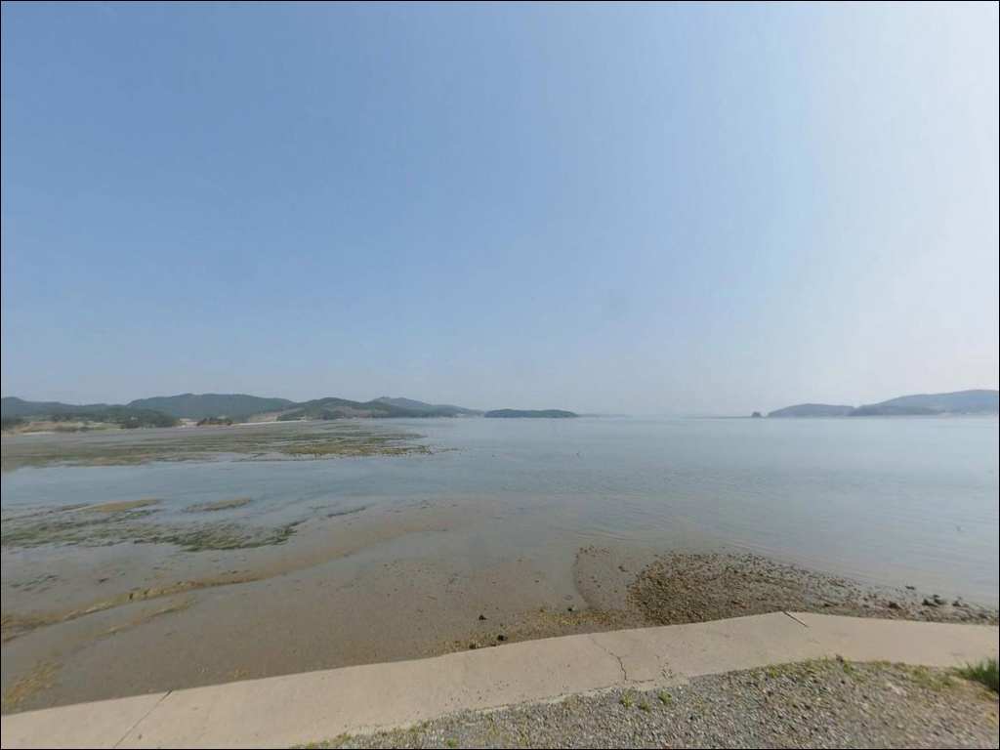
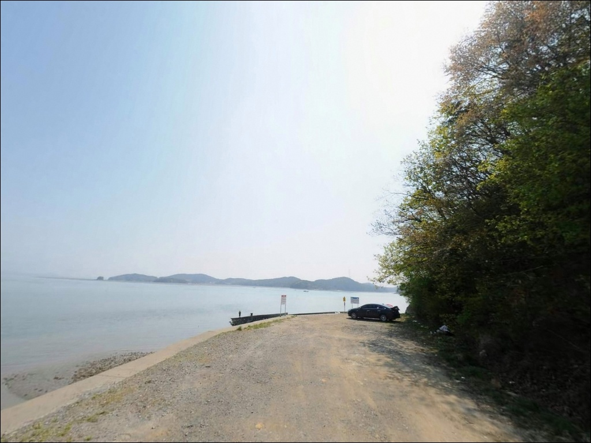
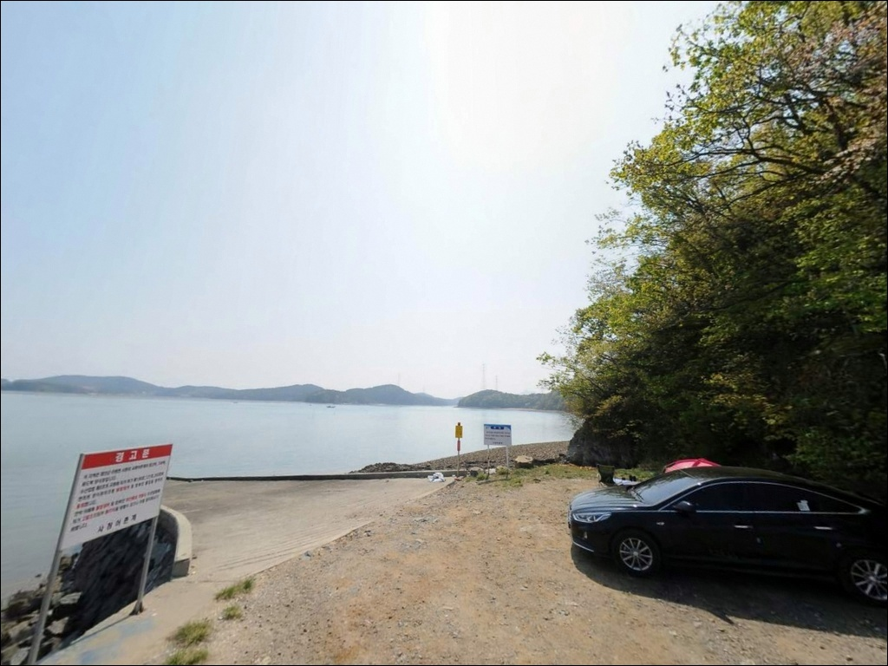
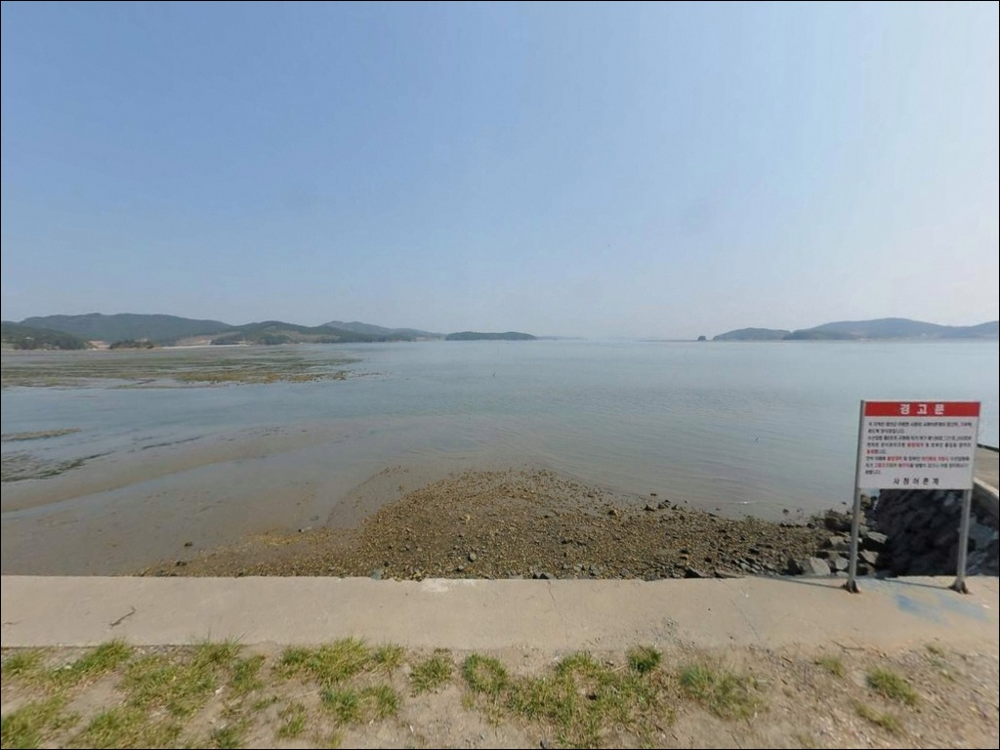
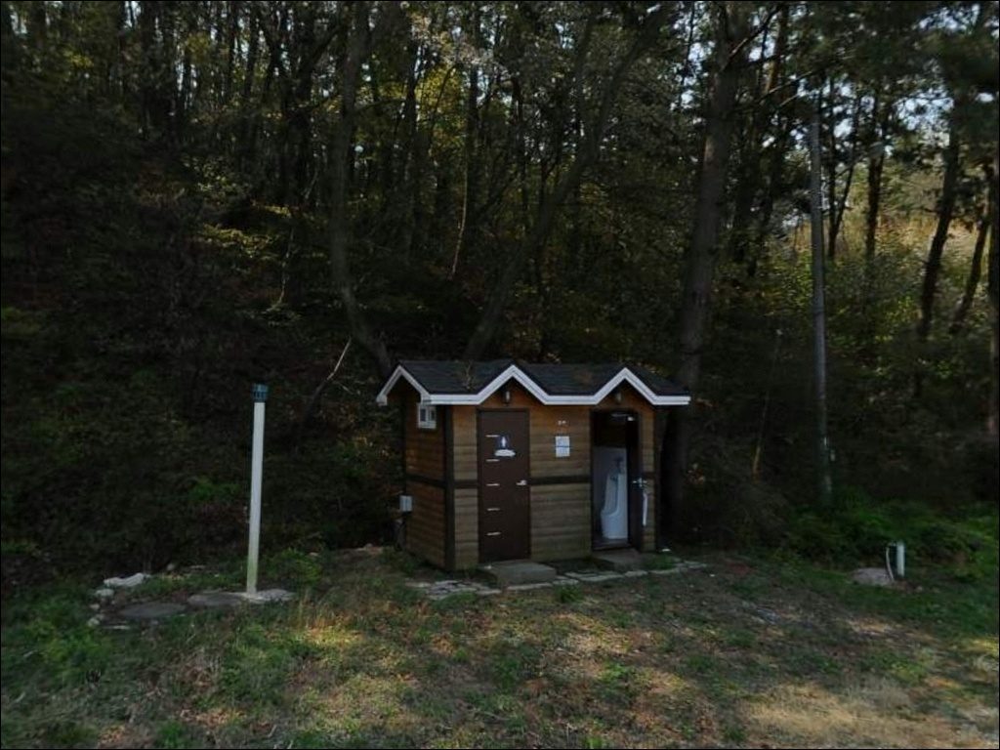

사창리 선착장, 충남 태안군 여유로운 차박, 낚시 포인트
이 페이지에는 광고(제휴 링크 포함)가 있으며, 광고 링크를 통해 구매하면 운영자가 판매 수익 또는 수수료를 받을 수 있습니다. 포인트 사진: 카카오맵 스카이뷰·로드뷰. 이 페이지의 지도·사진 이미지는 카카오맵의 실제 서비스 이미지와 다를 수 있습니다.


포인트 안내
사창리 선착장
충남 태안군 이원면 사창리 1-7
이 포인트에서 가장 많이 틀리는 판단은
물때와 무관하게 도착 시각을 정하는 것입니다.
간조 시 가로림만 갯벌이 넓게 드러나면서
선착장 앞 수심이 급격히 낮아지고,
어떤 채비를 써도 제대로 운용하기
어려운 상황이 만들어집니다.
만조 전후를 기준으로 도착 시각을 맞추는 것이
이 포인트 방문의 출발점입니다.
이 글은 사창리 선착장의
진입 여건, 물때 기준, 낚시 스타일별 공략 조건,
차박 환경에 집중합니다.
조황 단정이나 특정 어종 보장은
이 글의 범위에 포함되지 않습니다.

1. 진입 동선과 포인트 접근성
사창리 선착장은 이원면 면소재지에서
해안 방향으로 이어지는 농어촌 도로를 따라
진입하는 구조입니다.
해안도로 포장 상태는 비교적 양호한 편이지만,
선착장 직전 구간은 폭이 좁아지는
어촌 골목형 도로로 이어질 가능성이 있습니다.
대형 SUV나 캠핑 장비를 실은 차량이라면
출발 전에 위성지도로 진입로를
미리 확인하고 가는 편이 안전합니다.
선착장 앞에는 소형 공터가 있어
차량 1~2대 수용이 가능한 수준으로 보입니다.
해안선을 따라 노지 구간이 펼쳐져 있어
주차 후보지를 선착장 앞과
해안도로 옆으로 나누어 생각해볼 수 있습니다.
회차 여부는 노지 폭 상황에 따라 달라지므로,
소형~중형 SUV 기준으로 접근하는 것이 무난합니다.
어선이 계류하는 마을 선착장 구조상
주차 자리를 잡을 때는
어선 이동 동선을 막지 않는 위치를
먼저 확인하는 것이 기본 매너입니다.

2. 차박 환경과 야간 체류 여건
사창리 선착장 일대는 해안선을 따라
펼쳐진 노지 구간을 차박 거점으로 활용하는
방식이 일반적입니다.
민가 밀집도가 낮고 야간 차량 통행이 적은 편이라
프라이버시는 상대적으로 양호한 환경입니다.
이 구간은 마을에서 관리하는 방식으로
운영될 가능성이 있어,
도착 후 현장에서 이용료가 발생할 수 있습니다.
가로등이 거의 없는 해안 노지 구조상
야간에는 상당히 어두운 편입니다.
개인 조명 장비는 반드시 챙겨야 하며,
갯벌이 인접한 지형이라
어두운 상태에서 해안 쪽으로 접근할 때는
발판 상태를 각별히 주의해야 합니다.
서향으로 열린 해안 구조라
서풍이나 북서풍이 강한 날은
체감 온도가 떨어지고 체류 여건이 나빠지는 편입니다.
출발 전 당일 바람 방향과 세기를 확인하면
현장 자리 선택에 도움이 됩니다.


3. 주변 편의시설 및 인프라 현황
사창리 선착장 인근은 소규모 어촌 취락 중심으로
편의점이나 마트를 기대하기 어렵습니다.
이원면 면소재지 방향으로 이동해야
기본 인프라를 이용할 수 있는 구조입니다.
식수, 얼음, 낚시 소품, 연료는
출발 전 완비하고 진입하는 것이 현실적입니다.
같은 법정리 내에 음포해수욕장이 있어
시즌에 따라 간이 시설이 운영될 가능성은 있습니다.
다만 운영 기간과 상태는 시기에 따라 다를 수 있어
사전에 현장 확인이 필요합니다.
비상 상황 발생 시 태안읍까지 거리가 있으므로
비상약품과 기초 응급 준비는
출발 전에 갖춰두는 것이 기본입니다.

4. 방문 전 반드시 챙겨야 할 준비사항
가장 먼저 확인할 것은 물때입니다.
서해 이원면 해안은 조석 간만의 차가 큰 구간으로,
간조 시 갯벌이 광범위하게 드러납니다.
낚시 여건이 살아 있는 시간은
만조 전후 2~3시간 정도로 압축되는 구조입니다.
출발 전 바다타임에서 사창리 기준 물때를 확인하고,
만조 전후를 기준으로 도착 시각을 맞추는 것이
이 포인트 방문에서 가장 중요한 판단입니다.
주변에 감태 양식장이 있을 가능성이 있어
낚시 자리와 채비 방향을 정할 때는
양식장 라인과 어선 작업 동선을 먼저 파악해야 합니다.
양식장 시설물과 얽히는 채비 손실을 줄이려면
현장에서 주변 구조를 살핀 뒤
자리를 잡는 것이 기본 순서입니다.
야간 낚시를 계획한다면
헤드랜턴과 여분 배터리는 필수입니다.
갯벌 지형 특성상 어두운 상태에서
발을 잘못 디딜 경우 갯골에 빠지는 상황이
생길 수 있으므로 주의가 필요합니다.

5. 물때를 놓치면 공략할 수 없는
갯벌 지형의 낚시 여건
사창리 선착장은 가로림만 내측에 위치한 구조로
외해의 거친 파도 영향을 직접 받지 않는 편입니다.
대신 서해 전형의 완만한 갯벌과 모래가 혼합된
바닥 구조가 이 포인트의 지형 특성입니다.
간조 시에는 광범위한 갯벌이 노출되면서
선착장 앞에서도 낚시 여건이 급격히 나빠지는 것이
이 지형의 핵심 변수입니다.
원투낚시 관점에서 이 포인트는
캐스팅 거리를 충분히 확보해
갯벌 끝 수심이 살아 있는 구간을 공략하는 방식이 어울립니다.
만조 시에는 선착장 앞까지 수심이 들어오는 구조이므로
중~단거리 캐스팅도 운용할 수 있는 편입니다.
수중 암초보다 갯벌·모래 바닥이 주를 이루는 구조라
채비 밑걸림 빈도는 비교적 낮을 가능성이 있습니다.
다만 갯벌 특성상 봉돌이 바닥에 파묻히는 경우가 생길 수 있어
바닥 탐색 시 채비 회수 타이밍을 짧게 잡는 편이
손실을 줄이는 방법입니다.
최신 조황은 가기 전에 꼭 검색해 보시기 바랍니다.


6. 포인트에 어울리는 낚시 스타일
이 포인트에서 가장 기본이 되는 낚시는 원투낚시입니다.
갯벌과 모래가 혼합된 서해 바닥 구조에서
청갯지렁이나 참갯지렁이를 미끼로 멀리 던진 뒤
바닥 어종을 기다리는 방식이
이 포인트 지형 조건과 잘 맞습니다.
만조 전후에 수심이 확보된 시간대에 집중하는 것이
원투낚시 기본 운용법입니다.
야간 원투낚시는 붕장어를 노릴 수 있는 시간대입니다.
서해 이원면 권역 인근 유사 선착장에서
야간 원투 시 붕장어 입질이 활발한 패턴이 있는 만큼,
이 포인트에서도 야간 원투로 붕장어를
기대해볼 수 있는 구조입니다.
야간 원투를 계획한다면 물때와 기상을 먼저 확인한 뒤
입장 시각을 정하는 것이 순서입니다.
찌낚시도 만조 시간대에 어울리는 스타일입니다.
수심이 충분히 들어찬 상태에서
선착장 주변 수층 중층을 공략하는 방식으로,
숭어 계열 어종이 회유하는 시간대를 노리기에
적합한 방법입니다.
민장대를 활용한 소소한 생활낚시 방식도
이 포인트의 차분한 분위기와 잘 맞는 편입니다.

7. 대안 포인트와 플랜 B 동선
사창리 선착장에서 물때를 잘못 맞추거나
주차 여건이 여의치 않을 때
첫 번째로 이동해볼 곳은 이원방조제입니다.
사창리 선착장과 같은 이원면 해안선 권역에 있으며,
방조제 구조 특성상 다양한 위치에서
낚시 자리를 선택할 수 있어 포인트 탐색 여지가 넓습니다.
방조제 수문 인근은 조류 흐름이 형성되는 구간이라
원투낚시 조건이 더 살아나는 편입니다.
민어도 선착장도 같은 이원방조제 권역에 위치한 대안 포인트입니다.
도다리, 광어, 원투낚시 후기가 있는 곳으로
사창리 선착장보다 포인트 정보가
상대적으로 많은 편입니다.
사창리를 처음 방문하는 경우라면
이원방조제와 민어도 선착장을 기점으로 잡고
사창리 선착장을 병행 탐색하는 동선이 효율적입니다.
황골 선착장도 이원면 권역에서
원투낚시 포인트로 언급되는 곳입니다.
방파제 발판이 편한 구조로 알려져 있어,
이원면 해안 라인을 따라 탐색하는 일정에
함께 묶어볼 만한 대안입니다.

조용한 서해 포인트,
물때 하나가 하루를 가릅니다
원투낚시를 즐기면서 조용한 서해 노지에서
하룻밤 머물고 싶은 낚시인에게
사창리 선착장은 잘 맞는 환경입니다.
대형 포인트처럼 북적이지 않고,
가로림만 내측의 잔잔한 바다를 앞에 두고
낚싯대를 드리우는 방식이
이 포인트의 성격과 일치합니다.
반면 물때 계산을 빠뜨리거나
편의시설 준비 없이 무작정 들어가면
낚시 여건이 갖춰지지 않은 상황을
맞닥뜨리기 쉽습니다.
물때 확인, 자급 준비, 양식장 라인 사전 파악,
이 세 가지를 갖추고 간다면
조용한 서해 한 자락에서
낚시와 차박을 함께 즐길 수 있는 포인트입니다.
서해 갯벌의 물때 리듬에 맞춰
차를 대고 낚싯대를 펼치는 하룻밤은,
준비한 만큼 돌아오는 포인트입니다.